Soria
Cultura
La provincia de Soria ofrece a sus visitantes una amplia oferta turística basada en su riqueza natural, patrimonial, cultural e histórica, a la que se suma también una gastronomía de calidad donde la micología juega un papel fundamental. Uno de los mayores atractivos de la provincia es su patrimonio natural, con hermosos y diversos espacios que el visitante puede encontrar a lo largo y ancho de toda la geografía provincial. Los espacios naturales del Cañón del Río Lobos o de la Sierra de Urbión, la Laguna Negra, la Fuentona de Muriel, el Cañón del Val, o el monte Valonsadero, son solo una pequeña muestra de la diversidad de paisajes que ofrece Soria.
Otro recurso destacado de la provincia, es la multitud de testimonios culturales, arte y monumentos con los que cuenta, vinculados en gran medida con el románico. Una de las mayores joyas de este movimiento artístico se encuentra en la capital: la iglesia de Santo Domingo. Si vienes a Soria, tampoco puedes dejar de visitar la ermita de San Baudelio en Casillas de Berlanga, conocida como la “Capilla Sixtina del arte mozárabe”.


Volver al inicio
Geografía
Desde los orígenes del planeta el acontecer geológico ha dejado vestigios orográficos y pétreos de gran interés para expertos y aficionados. Sierras, montes, llanos, lagos y lagunas labradas y horadadas por glaciares, valles, páramos, simas, cañones cársticos,…. y ríos.
Son los ríos quienes han moldeado la morfología e historia de esta tierra a lo largo de milenios. Ellos han tallado paisajes y parajes naturales de gran belleza y excepcionalidad.
Los ríos que recorren los dominios sorianos han alimentado pueblos y agros; unos vierten al Ebro por el norte en las Tierras Altas y las del Moncayo; y por el sur en la Tierra de Medinaceli. Otros, muchos…, de cursos aplacibles o bravos transitan por serranías y valles por los que también lo hicieron los caminos históricos.
Pero sin duda el Duero es el gran río de Soria; su trazado ha tenido, y tiene, mucho que ver en la formación del paisaje y la historia de la actual provincia de Soria. Las fuentes primigenias brotan en los Picos de Urbión, al norte, en el Sistema Ibérico, a más de 2000 metros de altitud. Gira hacia el este entre pinares y embalses de regulación y ocio para visitar la ciudad de Soria trazando una gran curva junto a Numancia. Más adelante encauza aguas cada vez más caudalosas hacia el sur, hacia la villa fortificada de Almazán regando extensos campos de cereal y pinares resineros.

Es aquí donde toma una decisión definitiva queriendo quizás contemplar la monumental villa de El Burgo de Osma y los viñedos de la Denominación de Origen que lleva su nombre en las tierras de la Ribera. Finalmente torna con determinación hacia el oeste, con destino al gran océano.
Fue durante siglos frontera entre reinos medievales y culturas que cincelaron la piedra en arquivoltas, canecillos, capiteles y construcciones defensivas de la Extremadura soriana.
Volver al inicio
Historia
En sus tierras encontramos restos prehistóricos de incuestionable valor, entre las que destacan las pinturas rupestres, conservadas en diferentes abrigos. Dos de los yacimientos más importantes son los de Torralba y Ambrona, yacimientos paleontológicos y arqueológicos que corresponden a varios niveles fosilíferos con industria lítica achelense (Paleolítico Inferior) asociada, de hace al menos unos 350 000 años.
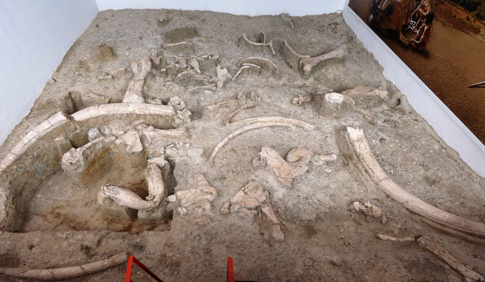Durante la Edad del Hierro, la provincia de Soria formaba parte de la Celtiberia, territorio en el que vivían los celtíberos, considerados mayoritariamente como celtas. Esta cultura ha dejado en la provincia restos arqueológicos de tanta importancia como los de Numancia, Uxama (Osma), o Termancia (Tiermes), y pasajes históricos tan singulares como el conocido como la Gesta de Numancia.
También hay en Soria, principalmente en la zona norte, más de doscientos topónimos vascos, los cuales indican la presencia de los vascones en la zona. Urbión, Larralde, el Acebal de Garagüeta de Arévalo de la Sierra, Garray o Narros son algunos de estos topónimos.
Según estudios epigráficos recientes, la presencia del euskera en el norte de la provincia y por consiguiente de vascones es anterior a que se impusiese una lengua céltica y después latina en la zona, e incluso anterior a todos los hallazgos epigráficos en euskera en La Rioja, el País Vasco o Navarra. Eduardo Aznar Martínez, autor del libro El euskera en La Rioja, realiza un análisis de las inscripciones en lápidas en euskera aparecidas en pueblos de las Tierras Altas, citando nombres que serían protoeuskaldunes. La palabra "Sesenco", que aparece esculpida junto a una imagen de lo que sería un toro, para el investigador, equivale en euskera a "zezenko" (toro joven, novillo).
Tras las guerras de conquista y el posterior proceso de romanización, la provincia perteneció al Conventus Cluniensis de la provincia romana de Tarraconensis. De este periodo destacan las citadas ciudades de Numancia, Tiermes y Ocilis (Medinaceli).
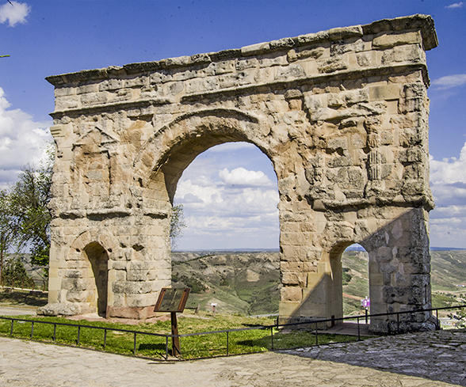Tras la caída del Imperio romano fue ocupada por visigodos primero y musulmanes después, de cuyo paso se conservan los castillos de Medinaceli y Gormaz, la fortaleza califal más grande de Europa en su clase.
Es durante esta época de dominio musulmán, en el que la provincia se convierte de nuevo en protagonista principal de la historia, ya que el más conocido guerrero musulmán, Almanzor, tenía su sede en la provincia, en el lugar de Medinaceli; y los lugares de la ribera del Duero soriano, pasaban constantemente de manos musulmanas a cristianas, y viceversa, estando prácticamente despobladas. De esta época son las innumerables atalayas y torres defensivas que salpican la provincia y que dieron el nombre a Castilla, tierra de castillos. Mientras tanto, hasta los siglos ix y x, habitaban el norte de la provincia de Soria gentes semi-paganas escasamente cristianizadas. Las fuentes árabes los denominaban bárbaros (aŷam), en vez de usar el término habitual para referirse a los cristianos (naṣrānī, نصراني).
Durante la reconquista en la Edad Media, la zona norte y oriental de la provincia de Soria pertenecieron desde el 1016 al Reino de Pamplona, porque el rey Sancho Garcés III llegó a un acuerdo sobre los límites entre el Condado de Castilla y el Reino de Pamplona, quedando para Pamplona la expansión hacia el sur y el este, la zona norte-oriental de Soria y el valle del Ebro, entre otros territorios.
En 1127, mediante mediación se acordó el Pacto de Támara. En este pacto, Alfonso el Batallador renunciaba al título de emperador y se delimitaron las fronteras entre los reinos de Castilla y los de Pamplona y Aragón con devolución de alguno de los territorios a Castilla. En este pacto, quedaban en territorio pamplonés Vizcaya, Álava, Guipúzcoa, Belorado, Soria y San Esteban de Gormaz.
Para seguir indagando en la historia de SoriaVolver al inicio
Localidades
La unidad administrativa básica en la que se divide la provincia son los municipios. Existen 183 en la actualidad. El municipio con más habitantes es la capital provincial. Es destacable un elevado número de ellos cuentan con poblaciones por debajo de los 500 habitantes. La extensión promedio del municipio en la provincia es de 56,30 km². Aparte de la capital provincial, entre las localidades destacan en cuanto a población Almazán y El Burgo de Osma. De acuerdo al padrón municipal del INE los 20 municipios más poblados de la provincia en 2019 fueron:

La capital de provincia es Soria
Volver al inicio
Localización
Su superficie es de 10 306,42 km² y está situada en el extremo oriental de la comunidad autónoma de Castilla y León. Limita con la comunidad autónoma de La Rioja y con las provincias de Zaragoza (Aragón), Guadalajara (Castilla-La Mancha), Segovia y Burgos (Castilla y León).
 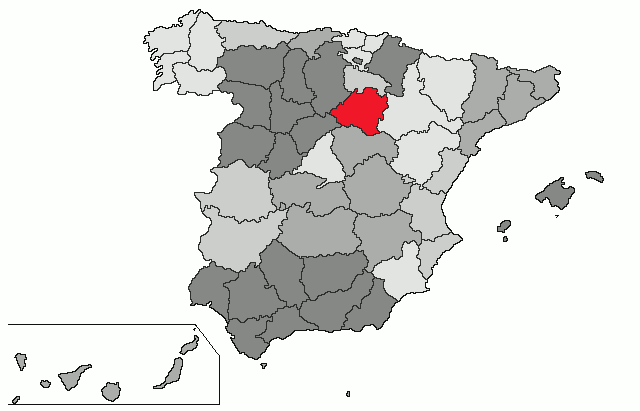
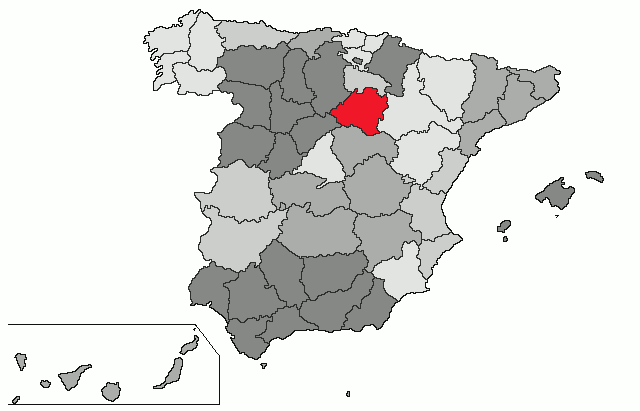
Volver al inicio
Naturaleza
Dentro de los espacios protegidos se encuentra:
- Cañón del Río Lobos 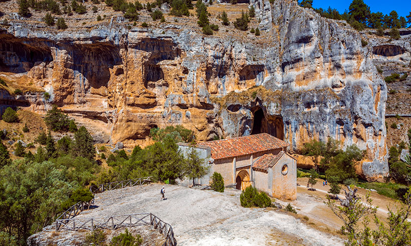
- Laguna Negra y los Circos Glaciares de Urbión 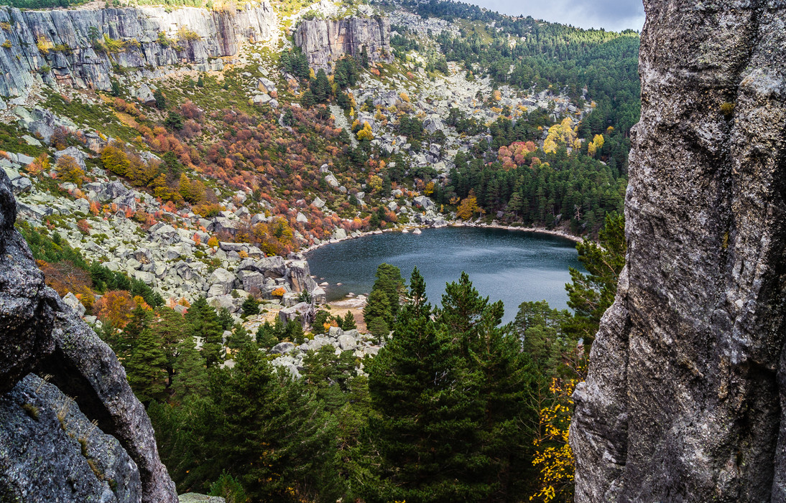
- Sabinar de Calatañazor 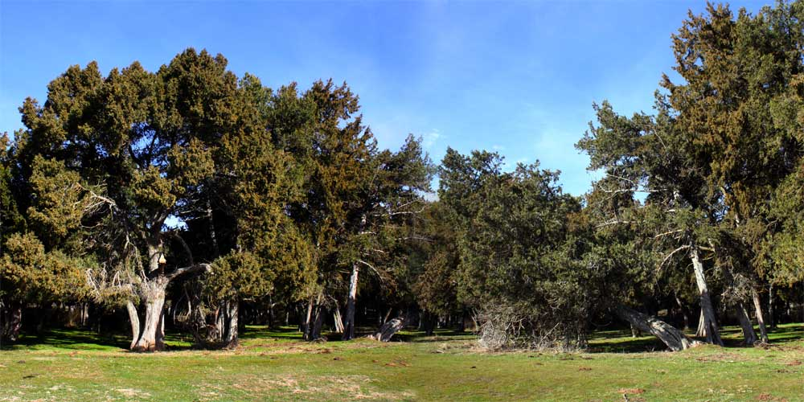
- Acebal de Garagüeta 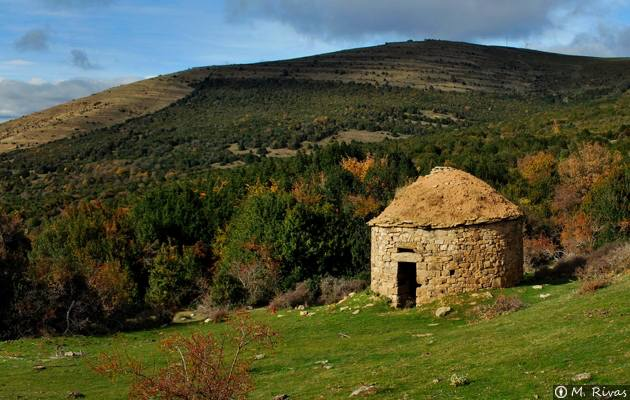
- La Fuentona 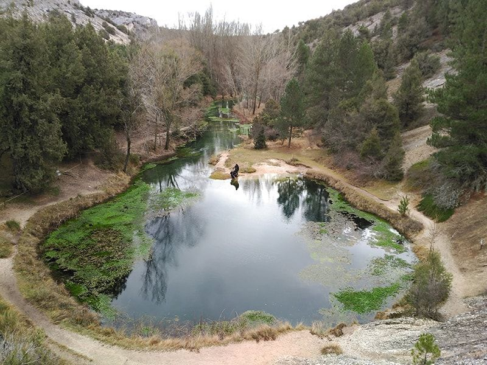
Algunas rutas naturales de la provincia de Soria
Volver al inicio
Tradiciones
Duruelo de la Sierra celebra cada martes de Carnaval su ronda popular. Los mozos del pueblo son los encargados de llevar a cabo esta tradición. Se incluyen los hombres solteros mayores de 18 años, así como aquellos que hace menos de un año que se han casado.
Alrededor de este grupo de gente, dos de ellos, conocidos como «mayorales» llevan unas varas lo que les permiten poner orden. En su tarea son ayudados por los jóvenes de 17 años que van a entrar a mozos, denominados “motriles”, los cuales llevan un cinto.
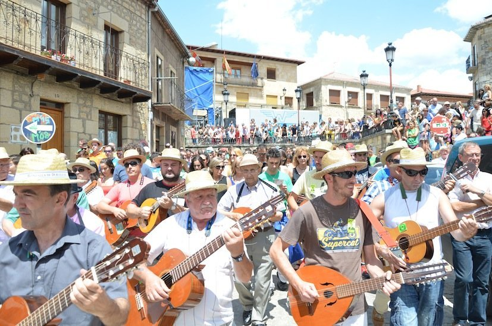Uno de los ritos más conocidos de la provincia vinculados al Carnaval es La Barrosa de Abejar. Este acto, que también se celebra el martes de Carnaval, está protagonizado por dos mozos, los quintos del año, que van ataviados de manera singular, portando un armazón que emula a un toro. A lo largo del día escenifican secuencias de viaje iniciático, muerte y resurrección. El ciclo sagrado de la vida a través de liturgias y gestos que se pierden en la noche de los tiempos.
Aunque es una fiesta para los vecinos de la localidad, lo cierto es que cada vez es más conocida y suscita el interés de curiosos que se acercan para conocer esta tradición de primera mano.
El Carnaval de Borobia es uno de los más tradicionales que se conservan en la provincia de Soria. Uno de los ritos que se conserva es el de los Zarrones, que recorren el pueblo haciendo sonar sus cencerros, lanzando paja de sus arpilleras a todo el mundo y enfrentándose con los más pequeños de la localidad. Una fiesta que arranca de madrugada y que ha sido recuperada en los últimos años gracias a la Asociación La Raya, en colaboración con el Ayuntamiento.
Volver al inicio
Otros
Gastronomía
La Gastronomía de la provincia de Soria es el conjunto de preparaciones y costumbres culinarias de la provincia de Soria. Provincia de ganados trashumantes (recuerdo de la Mesta). La cocina de esta provincia castellana es fundamentalmente una mezcla de lo pastoril y lo ganadero. Es zona Soria de asado castellano. Debido a la cercanía con Castilla-La Mancha posee algunas influencias y platos adoptados.
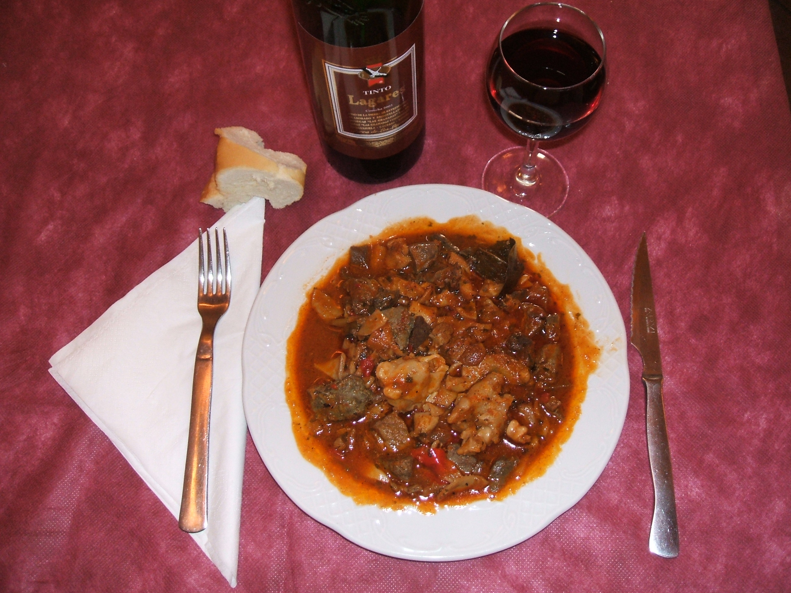Demografía
Con un 2,4 % de la superficie nacional, Soria tiene una población que representa tan solo un 0,2 % del total del país y con tendencia descendente. En 2014 el número de nacimientos ascendió a 643 mientras que el de defunciones fue de 1141, dando lugar a un crecimiento vegetativo negativo de 498 personas.
La provincia de Soria tiene un alto índice de despoblación. Soria es la provincia menos poblada de España, según el censo del 2018 del Instituto Nacional de Estadística, lo que la convierte en uno de los territorios más despoblados de la Unión Europea (8,6 hab./km² en 2018). Este índice está muy alejado de los valores medios de España y de la Unión Europea (92,37 hab./km² y 117 hab./km², respectivamente también en 2018).
A ello hay que añadir que la provincia de Soria ha perdido más del 40 % de su población en los últimos 50 años, que presenta la tasa de envejecimiento mayor de la Unión Europea (el 26,7 % de su población tiene más de 65 años, frente al 16,9 % de la media española) y que 116 de sus 183 municipios cuentan con menos de 100 habitantes.
Además la población de la provincia de Soria, se concentra en la capital y algunos municipios adyacentes; algunos municipios de la comarca de Pinares; y en las antiguas cabeceras de comarca (Almazán, Burgo de Osma y Arcos de Jalón) que también están en una dinámica regresiva. El resto de municipios se encuentran en una situación demográfica muy grave, camino de la despoblación total. Sobre todo se observa en la parte más oriental de la provincia, en las comarcas de Campo de Gómara, Moncayo, Tierras Altas y la de Almazán.
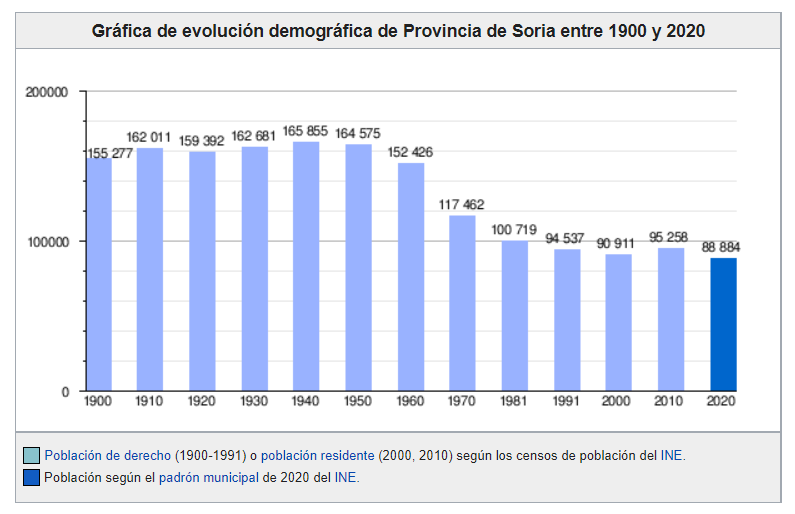Volver al inicio